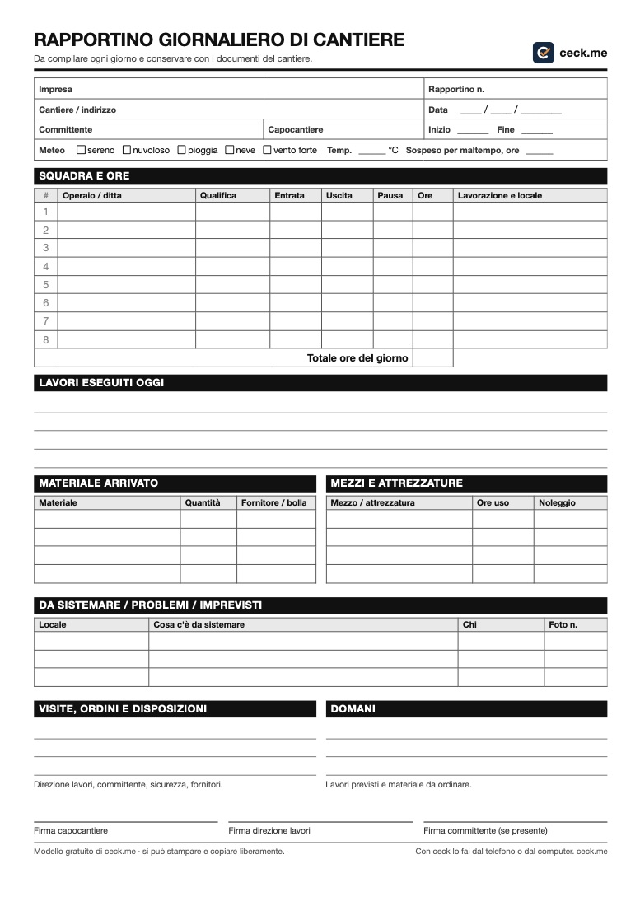

Per artigiani e piccole imprese ediliDa 1 a 10 operai. Muratori, cartongessisti, piastrellisti, pittori, impiantisti.
Rapportino di cantiere. Gratis, da stampare.
Il rapportino giornaliero in PDF, in 7 lingue, pronto da usare: squadra e ore, lavori eseguiti, materiale arrivato, cose da sistemare, firme. Scaricalo e usalo da domani.
Scarica il rapportino PDF ↓Oppure fallo online con ceck →Anche in: română · français · English · español · Deutsch · polski
Guarda cosa fa ceck: video e schermate →
Preparato da un capocantiere, dopo 43 anni di cantiere. Niente email, niente iscrizione.
A fine giornata il rapportino è già pronto
Lo compila ceck mentre lavori: ore, lavori, materiale ordinato, cose da sistemare. Guarda come.

Una pagina A4, tutto quello che serve
- Dati del giorno: impresa, cantiere, committente, data, meteo.
- Squadra e ore: 8 righe con entrata, uscita, pausa, ore e lavorazione.
- Lavori eseguiti e lavori di domani.
- Materiale arrivato con la bolla, mezzi e noleggi.
- Da sistemare: locale, cosa, chi, numero della foto.
- Firme di capocantiere, direzione lavori e committente.
Si bagna, si perde, e la sera va ricopiato.
Con ceck il rapportino si scrive da solo. Registri le ore della squadra, dal telefono o dal computer, e trovi già pronti squadra e ore, lavori eseguiti, problemi da sistemare con le foto e il meteo del giorno. Tu aggiungi solo visite, disposizioni e il lavoro di domani, e firmi con il dito.
Ogni rapportino resta salvato: se qualcuno lo corregge, la modifica resta scritta. A fine mese, o quando vuoi, scegli dal giorno al giorno e hai il riepilogo: giorni lavorati, ore per operaio e per lavorazione, problemi segnalati.
E ogni operaio legge nella sua lingua: italiano, rumeno, francese, spagnolo, inglese, tedesco, polacco.

Il rapportino di cantiere
Cos’è il rapportino di cantiere?
È il foglio che si compila ogni giorno in cantiere: chi ha lavorato, quante ore, cosa si è fatto, che materiale è arrivato e cosa non va. Serve per pagare le ore giuste, fatturare i lavori e ricordare cosa è successo.
Chi lo compila?
Il capocantiere o il titolare, a fine giornata. Con ceck registri le ore della squadra una volta sola: finiscono da sole nel rapportino, nel controllo del contratto e nel planning.
È la stessa cosa del giornale dei lavori?
No. Il giornale dei lavori è il registro ufficiale tenuto dal direttore dei lavori. Il rapportino è il foglio interno dell’impresa: più semplice, ma è quello che usi ogni giorno per ore, materiale e problemi.
Il modello è davvero gratis?
Sì. Lo scarichi senza lasciare la mail, lo stampi e lo copi quante volte vuoi.
Vuoi il rapportino digitale?
Con ceck registri le ore dal telefono o dal computer e il rapportino si scrive da solo. Crei il tuo account in un minuto ed entri subito. Gratis, senza carta di credito.
Prova gratis →Hai già un account? Entra